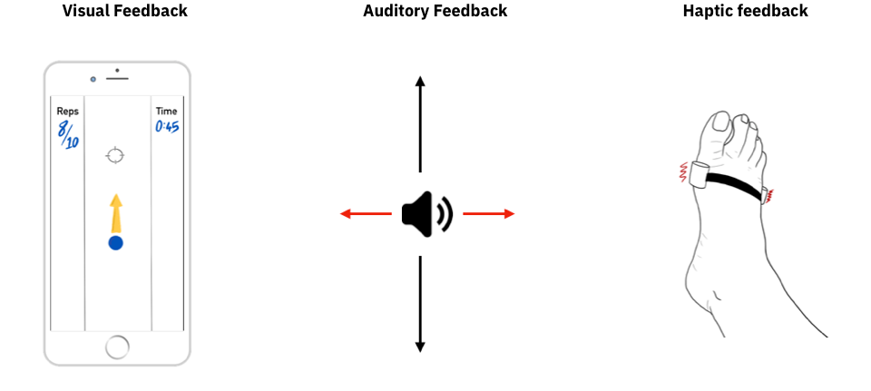

POAKme
Graduation Thesis Project 1
POAKme is a solution that enables individuals with Osteoarthritis of the Knee access care and rehabilitation from their homes.
RoleUX Researcher and Designer
TeamIndividual
Research MethodsContextual Enquiry,
Fly on the wall,
Expert interviews for evaluation,
SUS based descriptive qualitative analysis
WhyEnabling access to affordable healthcare while also reducing the burden on healthcare workers is a necessity. Osteoarthritis of the Knee severely deteriorate the quality of life an individual, physically and economically. Providing the opportunity to engage with physiotherapy without any physical constraints will vastly improve individual and societal outcomes.
WhatWith the eruption of new smartphone users, remote physiotherapy and tele-medicine solutions have an opportunity to disrupt the rehabilitative care industry. Providing access to the exercises patients need to do on their mobiles and monitoring the performance enables them to do the exercises from the comfort of their homes and frees up the doctor’s schedule to tend to patients in greater need of medical attention.
HowThrough the use of a monitoring device fitted on the leg connected to a smartphone, the execution of the exercises recommended for Osteoarthritis of the Knee was recorded. This data was shown to patients to help them improve their movement. The data was also cross checked by their physiotherapist, who has the option to contact the patient if any corrective measures to be applied.
IntroductionProviding accessible and affordable healthcare is fundamental to the development of a country. As the general population ages, the risk of injury is high. In such cases, the ability of an individual to maintain their quality of life becomes vital to their well being. Physiotherapy is one technique by which this can be achieved. But physiotherapy comes with its own pitfalls. Patients often need to sign up for sessions that take place multiple times over weeks, if not months. This places a strain on them as commuting during injury is an arduous task. This also adds to the overall affordability of the treatment when all the overheads are considered. Additionally, patients often see a drop in motivation to continue with the exercises either when they begin to feel fine, but aren’t fully recovered, or when immediate improvement is not visible. Availability of physiotherapists as per needs/schedules of patients is also another aspect that needs to be taken in account. All these factors result in a loss in quality of care.
Physiotherapists face an entirely different set of problems. Each therapist is often dealing with over 50 patients a day, in government hospitals, where the treatment is free or at minimal costs. They also need to reassess patients when they show up to understand which stage of recovery they are in, as adherence to the prescribed exercises at home is unclear. The only means of knowing whether a patient has done the exercises at home in between sessions is by word of mouth, which makes progressing in the treatment difficult. Patients might sometimes leave a long gap between sessions, which necessitates lengthy conversations about the Do’s and Don’ts when performing the movements. Why Osteoarthritis of the Knee?Osteoarthritis of the Knee (OA Knee) is a degenerative injury in which the natural cushioning between the joints - cartilage - wears away. It often occurs due to excessive wear and tear of the joints, but can also be hereditary. Treatment in such cases is lifelong and starting early is easiest way to ensure a higher quality of life. The initial onset, especially when it occurs in younger people, is usually not painful and is normally ignored until it starts to hamper daily activities. TelerehabilitationTelerehabilitation is the delivery of rehabilitation through the use of telecommunication technologies [1]. India is home to one of the fastest growing smartphone markets in the world [2]. This, combined with the widespread proliferation of internet access, provides an opportunity to better the quality of life of individuals at scale. Secondary Research
Existing solutions for osteoarthritis of the knee are expensive, clinic facing, and require large substantial infrastructure. These factors are not suited for resource constrained Indian contexts [3, 4, 5].
Most studies that deal with home program based solutions have been developed for a western countries, and similar adoption behaviours might not exist amongst patients in India and the same needs to be studied.
There is a dearth of solutions tailored for motivating patients with chronic disorders through visualisations, both real time and post exercise. The delivery of such information in a manner that will make sense to this audience will have to be studied [6, 7].
Primary ResearchThe primary research was conducted at B.Y.L Nair Hospital, Mumbai, under the guidance of Dr. Chhaya Verma and Dr. Krutika Bhosale. Given that I had chosen to work with patients undergoing therapy for OA Knee, I was able to interact and observe a limited set of patients and focus on their problems in greater depth.There were two kinds of patients visiting the hospital for OA Knee therapy:To scope the project down further, I decided to focus on patients who were also professionals with desk jobs or home-makers whose daily activities aren’t hampered by the injury. Insights
Patients do not want to exert themselves unless absolutely required.
Initially motivated, but lose motivation when they dont see any imporvement.
Fail to notice their rotating foot when performing the exercise.
Would prefer not to travel regularly for therapy.
The physiotherapists firmly believe that if the individual chooses to commit to doing therapy, it is important they do it regularly and correctly. For not, the only way to ensure that happens is to regularly check-in at the clinic. The physiotherapists often tell the patients: "Not doing the exercise is better than doing it incorrectly." Problem StatementHow can I provide an affordable means of performing physiotherapy exercises for patients with Osteoarthritis of the Knee from the comfort of the their homes, while addressing issues such as ensuring correct practice of exercises and motivation through visualisations? Objectives
Develop a low-cost device that can give real time feedback for in session correction of exercise.
Generate post exercise visualisations that will allow for analysis of parameters used to measure improvements.
Understanding OA Knee therapyThere are 10 key exercises, of which 6 are dynamic exercises - involving movement of the injured joint - and 4 are static exercises - involving internal contraction and extension of muscles. The point to keep in mind when doing these exercises is to ensure there is movement only along one plane with minimal rotational movement.
Exercises prescribed by doctors for OA Knee ExplorationsIdeation for a solution for remote physiotherapy was broken down into three parts. First, I needed to figure out which sensors would help track the movement most accurately. Secondly, what type of feedback would be the most appropriate for performing the exercises. The feedback would need to let the user know what they are doing when compared with what they are doing and, most importantly, let them know when they go wrong and how they are going wrong. And lastly, what kind of wearable would help track and provide the feedback most accurately. SensorsUltrasonic sensors (HC-SR04) and accelerometer gyroscope sensors (MPU6050) were explored. The HC-SR04 allowed for the leg to be completely free when exercising, where as, the MPU6050 provided the greatest clarity of signal when positioned in the positions shown below.Sensors prototypes explored: Ultrasonic sensors and Accelerometer-gyroscope FeedbackThe main considerations when deciding which feedback mechanisms to use were:
Ability to control the feedback input duration to prevent overexercising.
Easy and intuitive elements to reduce cognitive load.
Ability to provide feedback of rotational movement to prevent incorrect practice.

Visual, auditory and haptic feedback solutions were designed. Haptic feedback was harder to discern, and so was ditched in favour of a combination of visual and auditory feedback. WearablesVarious methods to keep the MPU6050 positioned accurately throughout the duration of the exercise ideated.Pilot StudyThe pilot was conducted at B.Y.L Nair hospital. The Informed Consent Document was based on the Declaration of Helsinki and was given to all participants. Two out of the six dynamic exercises were chosen and designed for. These were Dynamic Quadriceps and Straight leg Raising. Pre and post experimental measures of strength were taken by hand and self reported pain on the 0th day and 7th day were recorded. PrototypeThe wearable device was built with an MPU6050 connected to a NodeMCU. A mobile app communicated with the NodeMCU to transmit information to be stored in the database. Feedback was given through the mobile app built using Unity. The data collected from the MPU6050 was displayed as a graph on a website the patient and doctor could access.Prototype and Unity application Realtime feedback when connected to the device Website for post exercise feedback System architecture ResultsI was able to get the consent of only one individual to participate in the experimental group and another individual in the control group. The limited time frame within which the experiment was conducted and lack of participation means nothing conclusive can be drawn from this.Final ConceptPOAKme is the culmination of this design process. It is an app that, in conjunction with a wearable device called POAKY that comes a in a sleek packaging, helps patients perform physiotherapy from the comfort of their homes. The collected data is used to generate visualisations to help the user visualise their performance in the exercises prescribed.
The flow of the app is described below. Onboarding involves pairing the device, Poaky, with the app and then choosing the leg the device will be worn on during the exercises.The homepage shows a list of exercises assigned to you by your physiotherapist. Selecting the exercise lets you know about the exercise and why you will be doing it. Before the exercise begins, a set of quick instructions to follow pop-up, which includes the movement to be done and what the representation of rotational movement will be.The exercise is a simple follow along accompanied by music, which is not included in this prototype. Post the exercise, the user is asked to rate the pain they felt.
An overview of the exercises done by the patient is shown in the exercises tab. This is to help motivate the person as they see their metrics acrue. Each movement done in every exercise is recorded and available for revieiw, with incorrect movements shown in red.Advanced users can opt for more complex visuals that show more data upfront. There is also a device manager to help the user manage all the poaky devices they might buy. This offers scope for expanding the solution from being targeted for OA Knee to other musculoskeletal injuries as well.EvaluationsSystem Usability Scale based qualitative descriptive analysis through semi-structured interviews were conducted to evaluate the prototype and application with patients and doctors. The prototype was evaluated for the usability of the device, application and realtime and post physio visualisations. The concept application was evaluated for the momentary and episodic perceptions, along with the usability of the two visualisations. Both the qualitative evaluations resulted in positive responses towards the applications. The users said the app had appealing visuals that would encourage them to come back to perform the exercises. They also found the visualisations useful on the prototype website and concept applications and found the integration of the app with the device to be intuitive.Physiotherapists found the application to be a good alternative to the Home Program, a sheet with a list of all the prescribed exercises and how to do them. The felt it complemented the offline physiotherapy sessions quite well. The prototype and concept application were well received, with the therapists finding the visualisations novel and useful. ConclusionTelerehabilitation is a field with potential for massive disruption in rehabilitative medical care. This project aimed at minimising clinical contact while maximising remotely supervised home care. This is extremely important in areas that have poor access to quality care. In light of the Covid pandemic, interventions that can provide care remotely, similar to those received at the clinic, have become important even to those in urban centres. With the mobile and Internet infrastructure only improving from here on, the potential and need for such solutions in the market will grow.
This project was completed in partial fulfillment of credits for the Integrated Masters Program in Interaction Design at IDC School of Design, IIT Bombay. The duration of the project was from January 2020 to June 2020.
Links
References
Palazzo, C., Klinger, E., Dorner, V., Kadri, A., Thierry, O., Boumenir, Y., ... & Ville, I. (2016). Barriers to home-based exercise program adherence with chronic low back pain: Patient expectations regarding new technologies. Annals of physical and rehabilitation medicine, 59(2), 107-113.
"India Now Fastest Growing Smartphone Market With Double ...." 14 Aug. 2019, https://inc42.com/buzz/india-now-fastest-growing-smartphone-market-with-double-digit-growth/ . Accessed 16 Nov 2019.
Brennan, D. M., Mawson, S., & Brownsell, S. (2009). Telerehabilitation: enabling the remote delivery of healthcare, rehabilitation, and self management. Stud Health Technol Inform, 145(231), 48.
Caro, K., Tentori, M., Martinez-Garcia, A. I., & Zavala-Ibarra, I. (2017). FroggyBobby: An exergame to support children with motor problems practicing motor coordination exercises during therapeutic interventions. Computers in Human Behavior, 71, 479-498.
Pyae, A., Liukkonen, T. N., Luimula, M., & Smed, J. (2017). Investigating the Finnish elderly people’s user experiences in playing digital game-based skiing exercise: A usability study. Gerontechnology Journal, 16(2), 65-80.
Chandra, H., Oakley, I., & Silva, H. (2012, October). Designing to support prescribed home exercises: understanding the needs of physiotherapy patients. In Proceedings of the 7th Nordic Conference on Human-Computer Interaction: Making Sense Through Design (pp. 607-616). ACM
Petursdottir, U., Arnadottir, S. A., & Halldorsdottir, S. (2010). Facilitators and barriers to exercising among people with osteoarthritis: a phenomenological study. Physical therapy, 90(7), 1014-1025.